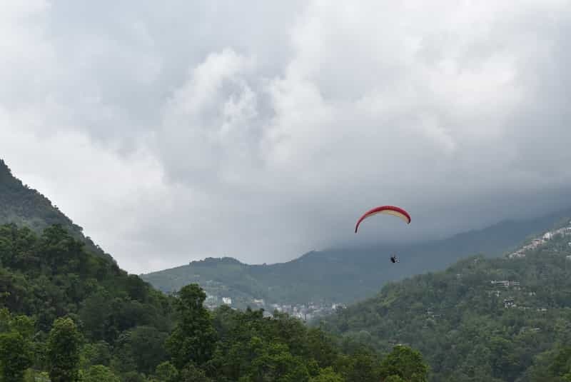

1. Bir Billing
Bir Billing in Palampur, Himachal Pradesh is considered the best place in India for adventures in paragliding, which is why there is an abundance of paragliding operators there who offer short, medium and long flying sessions.
The Billing take-off point is Asia’s highest and the world’s second highest at around 8000 feet above sea level and the landing is at around 4000 feet. Go for tandem flying if you’re not an expert paraglider. October to June is the best time to go paragliding in Bir Billing.
2. Nandi Hills
A quiet hill town around 60 kms from Bangalore, Nandi Hills is a popular paragliding destination in the south. Paragliding at more than 4500 feet, many expert paragliders like Nandi Hills for its perfect climate and plateaued terrain with hill canopies.
It has recently become a popular paragliding destination for young adventure seekers of Bangalore and Hyderabad. The trek to the take off points are picturesque and the best time to go paragliding here is all through the year, except monsoons. Book a paragliding session from many experienced experts operating out of Bangalore.
3. Manali
No doubt one of the best places to paraglide with an ideal climate and spectacular sights, Manali, Himachal Pradesh is a heaven for adventure seekers. Kullu Valley, Sethan, Halan, Barot and Solang Valley are some of the best spots in Manali for ideal short or long paragliding, hand diving and skydiving sessions.
A one hour long paragliding session will let you experience the scenic landscapes of the Himalayas and numerous meadows and water bodies. For a complete adventure experience, plan camping, trekking and paragliding in Solang Valley. Best time for the adventure is between February and March and May to October, except monsoons.
4. Kamshet
A 100 kms from Mumbai and 50 kms from Pune, Kamshet is one of the best places for paragliding in the western region of India. It is a popular weekend activity for the urban metropolitan class. Group flying and solo flying are both popular here.
The Sahyadri Ranges below make for a good sight from up in the skies. Many paragliding schools and workshops have sprung up in the area, providing certified courses and sessions to enthusiasts and travellers. Visit anytime except summers and monsoons.
5. Gangtok
An up-and-coming paragliding spot in India, although the trip-savvy backpackers exploring northeast India have long discovered the thrills of paragliding in Sikkim, freshly initiated enthusiasts have started considering Gangtok to experience paragliding. The medium range session offers a 10 minute flying experience while the higher one lasts for 20 to 30 minutes.
The view of villages nestled in the great big Himalayas is amazing. Adventurers like to combine rafting and paragliding during their trip. Best time is October to April.
6. Mussoorie
Explore the beauty of Garhwal Himalayas while soaring in the skies of Mussoorie, a popular hill station in Uttarakhand. There are many regular tourists visiting the hill station who want to enjoy amateur paragliding, hence the operators are many and the packages are cheap too.
Pick from a 1-2 minute fly to an hour-long fly if you’re in the mood for a zen-like experience. Barring the monsoon, any time is good to paraglide in Mussoorie.
7. Yelagiri
A lesser known spot around the country but a famous one in Tamil Nadu, Yelagiri is a good paragliding spot for those who cannot make it to the exotic locales of the Himalayas.
A sparsely populated scenic hill town of Tamil Nadu is a popular weekend getaway from Chennai where you can indulge in some light paragliding at 2000 feet above sea level. Amateurs and intermediate workshops also take place here. Avoid during summers and monsoons. It is 3 hours away from Chennai.
8. Panchgani
A famous paragliding spot in India where training and flying both are a delight. Its greenery, rivers, lush hill ranges and ideal ridges make it a great paragliding destination. Expert flyers have logged upto 5o to 70 hours in cross-country flying due to its rugged terrain.
There are tandem flights available from multiple take-off points in Panchgani for beginners like Tapola, Khinger and Bhilar. Solo jumps are facilitated upon training. Try parasailing in Panchgani too.
9. Nainital

The stunning hill station of Nainital is yet another popular destination for paragliding for amateurs and experts. Even children can enjoy a tandem jump here. The aerial views of the landscape are stunning.
You can choose a normal fly for 3 to 10 minutes, a short fly for 90 seconds or opt for a high fly for 15 to 45 minutes. Take off spots are in Bhimtal and Naukuchiatal. Visit from March to June and October to December.
10. Ranikhet
Fly with the eagles at the thrilling adventure camps of Ranikhet in Uttarakhand. A great spot for all aerial activities including paragliding, parasailing, hand gliding and hot air ballooning, Ranikhet is a hub for aero sports in north India, offering all activities at an affordable price.
Enjoy paragliding and trekking in the dense oak forests along with night camping. Amateurs can find the take off point safe as it is above a wide valley floor.
11. Shillong
Take off (source) Meghalaya is the perfect destination for an exhilarating joyride in the skies owing to its snow-clad mountains, tall trees, and wide expanses where you’ll find no one but yourself looking down on a solitary but divinely picturesque landscape.Meghalaya Paragliding Association is the best operator here to avail the services from. September to April are the best months.
12. Bedni Bugyal
Probably the most scenic paragliding destination, Bedni Bugyal lies on the Roopkund Trek trail in Uttarakhand. You’ll have to trek for about 11 kms from the hamlet of Wan to the take-off point in Bedni Bugyal, thus making this the ultimate trekking/paragliding adventure.
The meadows and alpine ranges from up top will blow your mind. This is an offbeat paragliding trip that only the most avid adventure seekers attempt. But the experience of flying over the wonders of Kumaon is unlike any other. The best time is from September to May.